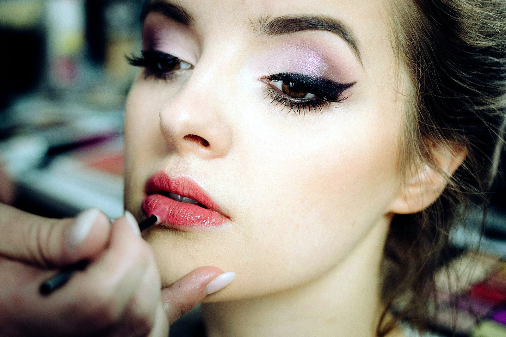
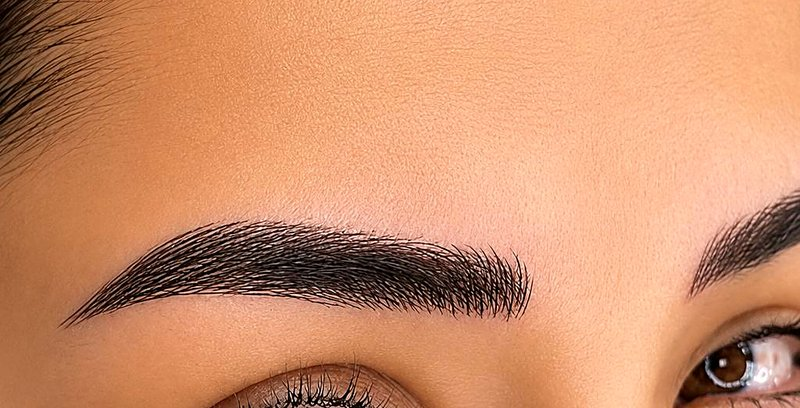
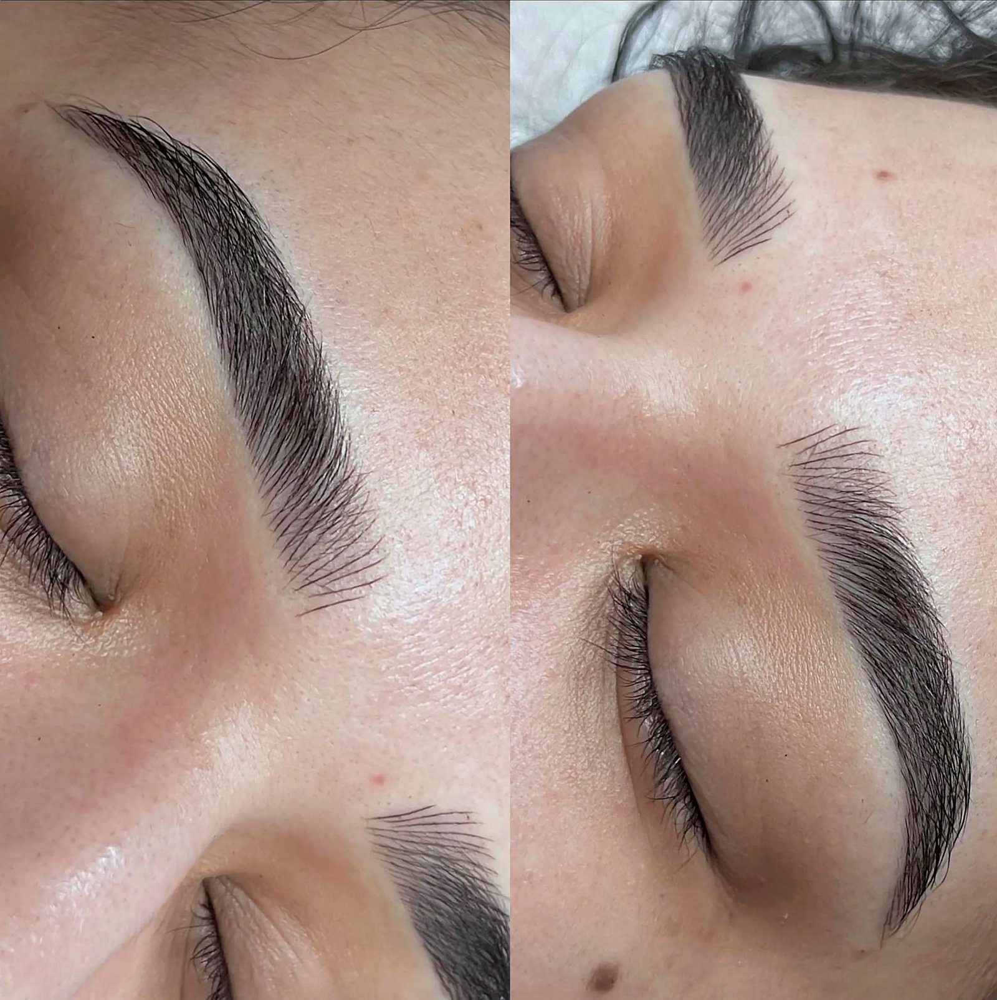
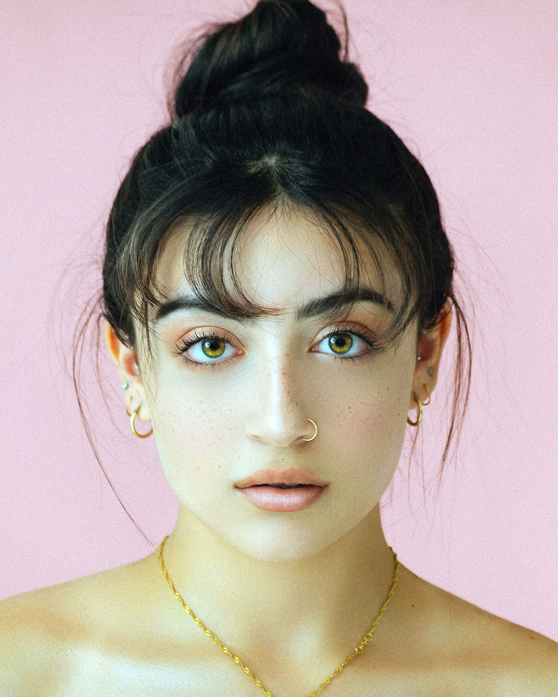
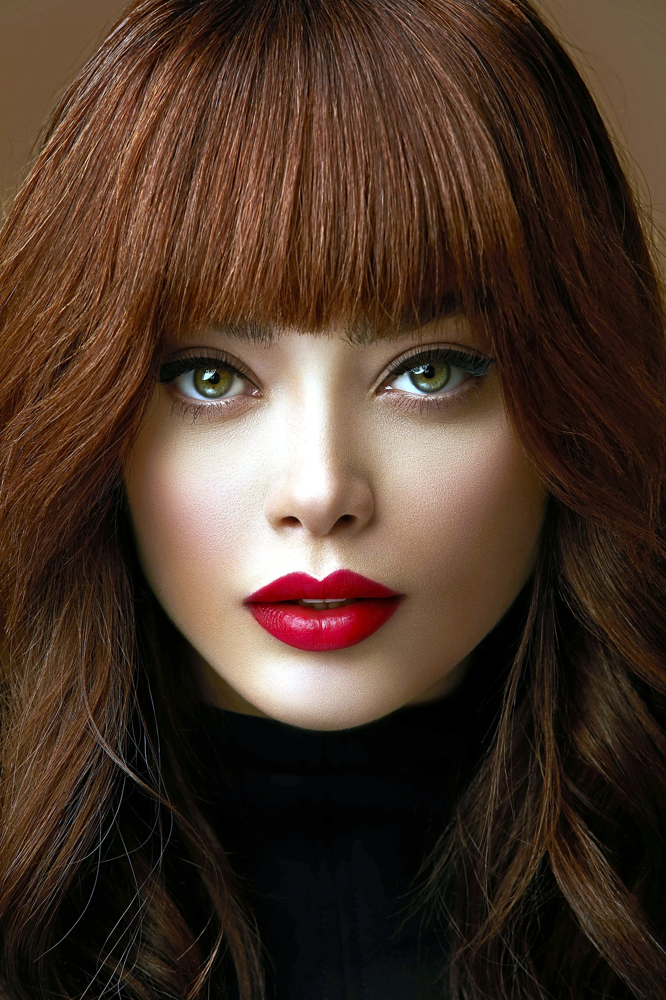
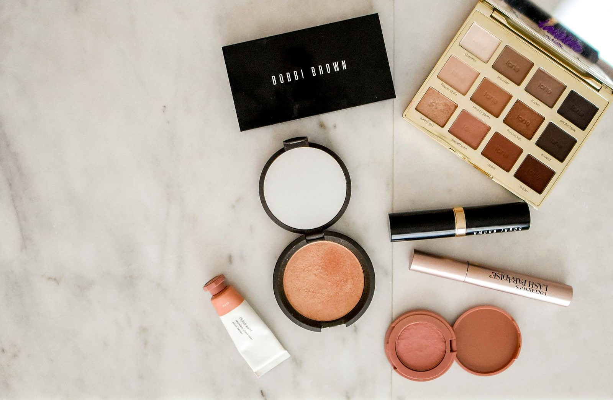

Ombre brows, shaped around you.
Soft-front, defined-tail ombre eyebrows, done at the shop and mapped to your face before anything permanent begins. Keep U'r Uniqueness is not a slogan here: your brows should still look like yours.
Book ombre brows
How a brow appointment works
- Consult and brow mapping first: shape is drawn, adjusted with you, and approved by you before the service starts.
- Colour is matched to your hair, skin tone and the look you asked for: soft and natural, or bold.
- Aftercare is explained and written down, including what normal healing looks like day by day.
- A touch-up window is discussed at the appointment, so you know your options before you need them.
Pricing
Ombre brows — $500 per session. One flat price for the full session, including your consult and brow mapping, set at the middle of the South Florida market. Brow close-ups are in the gallery below. Client photos appear only with written consent, per photo. No borrowed results.
Drawn-on eyebrows — $20
Not ready for anything semi-permanent? Our brow artist can draw your brows on by hand — shaped and filled with professional brow products, matched to your face and your style. It is the drawn look, done by a skilled hand: made for clients with little or no brow hair, and for anyone who loves the drawn look without the semi-permanent commitment.
- $20 flat — both brows, drawn fresh at your appointment.
- Makeup, not tattooing: it washes off, so you can try a shape on before ever thinking about ombre.
- Shaped with you first: the outline is drawn, adjusted and approved by you before the fill goes on.
Brow work, up close
The brow is the work: a soft front, a defined tail, and shading matched to your face before anything permanent begins. These close-ups show the detail to look for — shape, gradient and clean edges.




Photography: stock close-ups of brow work, shown for illustration — not photos of KuuStore clients. Client photos appear only with written consent, per photo.
Questions
How long do ombre brows last?
Results vary by skin type and aftercare. Your technician will talk through typical timelines and touch-ups honestly at your consult, before you commit.
Does it hurt?
Most clients describe mild discomfort. Your technician explains each step before it happens and checks in as you go.
Can I see the shape before it is done?
Yes. Mapping and your approval come first. If the drawn shape is not right, we adjust it or we do not proceed.
Brows, faces & the beauty desk


